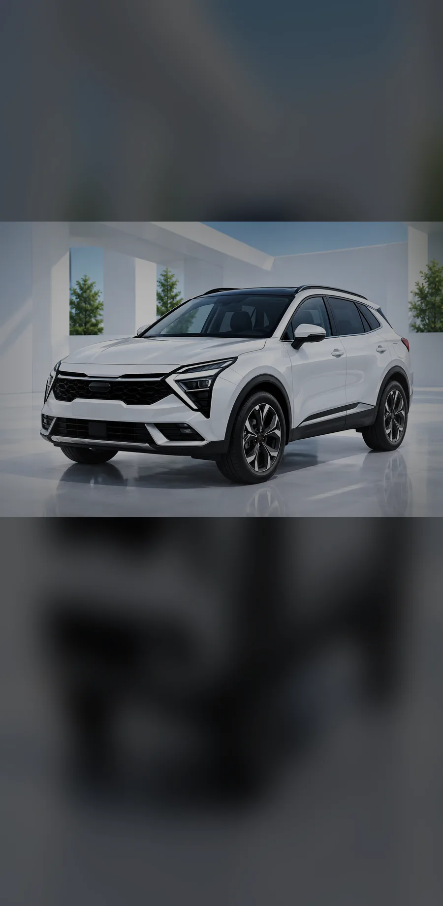
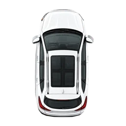
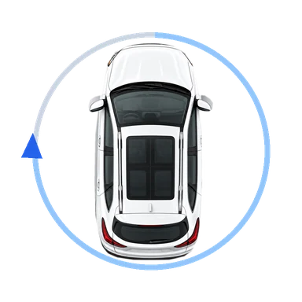

فیلم ۳۶۰ درجه خودرو
آرام دور خودرو حرکت کنید
خودرو را در کادر نگه دارید.
پیشنمایش نمونه۶۵٪

۰۰:۲۸
✓سرعت حرکت مناسب
✓گوشی تراز
✓نور مناسب

خودرو را در کادر نگه دارید.
پیشنمایش نمونه

بهآرامی دور خودرو حرکت کنید و آن را در کادر نگه دارید.